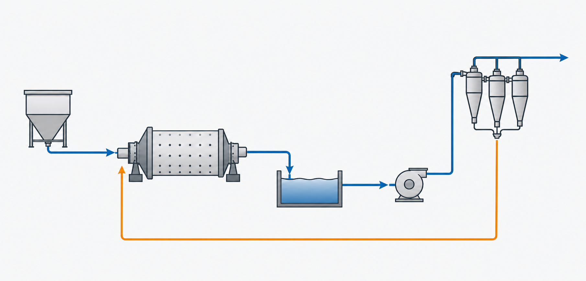

Simulación
Granulometría
Modelo
Energía específica
—kWh/t
Potencia requerida
—kW
P80 producto / overflow
—µm
Descarga molino:—µm
Carga circulante
—%
Diagrama del proceso
PulpaAguaRecirculación

ALIMENTACIÓN FRESCA——
MOLINO DE BOLAS——
ESTADO DEL SUMP—
——
0%
BOMBA——
FEED A CICLONES————
DESCARGA DEL MOLINO———
OVERFLOW · PRODUCTO———
UNDERFLOW · RECIRCULACIÓN AL MOLINO——
Estado rápido
Modelo detenido.
Inventario—
Utilización—
U/F sólidos—
Tiempo—
Tendencias del circuito
Todas las curvas usan tiempo simuladoGranulometría dinámica · P80
Descarga molinoOverflowObjetivo
Flujos de sólidos
Fresh feedFeed molinoUnderflowOverflow
Carga circulante
CL
Inventario del molino
Inventario
Potencia del molino
Potencia utilizada
Nivel del sump
Nivel
Condición de pulpa a ciclones
Sólidos [w/w %]Densidad × 40
Balance de agua
Agua molinoAgua sumpAgua overflowAgua underflow
Distribución granulométrica
Alimentación frescaDescarga molinoUnderflowOverflow / producto
P80 alimentación—
P80 molino—
P80 underflow—
P80 overflow—
| Tamaño [µm] | ● Alimentación | ● Descarga molino | ● Underflow | ● Overflow | ||||
|---|---|---|---|---|---|---|---|---|
| Ret. [%] | Pas. [%] | Ret. [%] | Pas. [%] | Ret. [%] | Pas. [%] | Ret. [%] | Pas. [%] | |
Ret. = porcentaje retenido por clase; Pas. = porcentaje pasante acumulado. Todas las corrientes proceden del balance por clases y el P80 se obtiene por interpolación logarítmica.
Base matemática implementada
Sólidos: balances dinámicos por 20 clases en molino y sump. La rotura conserva masa y el underflow retorna al molino.
Agua: inventarios explícitos en molino y sump; el agua fresca y recirculada participa en todos los balances. Se calculan residuos de molino, sump, ciclón y sistema.
Pulpa: la fracción másica de sólidos [w/w %], densidad y caudal volumétrico se obtienen de las masas de sólidos/agua y de la densidad mineral.
Sump y bomba: mezcla perfecta; nivel calculado desde volumen real. La bomba queda limitada por capacidad, velocidad e inventario disponible, con corrección proporcional de nivel.
Ciclón: curva de Tromp por clase. La corrección de d50 por presión, caudal, densidad y geometría, y la recuperación de agua al underflow, son provisionales y calibrables, no correlaciones validadas de diseño.
Numeración: Runge–Kutta de cuarto orden con subpasos; reloj, solver y render están separados.
Agua: inventarios explícitos en molino y sump; el agua fresca y recirculada participa en todos los balances. Se calculan residuos de molino, sump, ciclón y sistema.
Pulpa: la fracción másica de sólidos [w/w %], densidad y caudal volumétrico se obtienen de las masas de sólidos/agua y de la densidad mineral.
Sump y bomba: mezcla perfecta; nivel calculado desde volumen real. La bomba queda limitada por capacidad, velocidad e inventario disponible, con corrección proporcional de nivel.
Ciclón: curva de Tromp por clase. La corrección de d50 por presión, caudal, densidad y geometría, y la recuperación de agua al underflow, son provisionales y calibrables, no correlaciones validadas de diseño.
Numeración: Runge–Kutta de cuarto orden con subpasos; reloj, solver y render están separados.